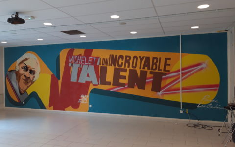

« Michelet a un incroyable talent », une fresque pour le centenaire du collège !
Mme Thomas , Les élèves des « cordées de la réussite » ont travaillé à l’élaboration et la réalisation d’une fresque à l’occasion du centenaire de l’établissement avec l’artiste graffeur Bertrand dit « Parse ». Un grand coup de jeune pour le mur de la salle polyvalente qui voit désormais Jules Michelet sortir d’un téléphone portable pour clamer que nos élèves ont un incroyable talent … et ça vous le découvrirez prochainement …
Polar Lens
Mme Thomas , Durant le deuxième trimestre les élèves de quatrième ont préparé le salon Polar Lens. A cette occasion ils ont pu rencontrer le célèbre ancien espion et auteur Olivier Maes, puis se glisser dans la peau de faussaires au cœur d’un trafic de répliques du célèbre scribe accroupi arrivé au Louvre Lens sous la houlette de l’artiste Robin Delansay dans le cadre des cours d’arts plastiques. Avec Mr Lesage nos élèves ont assuré sur place la découverte de leur travail par les écoles de la ville grâce à l’animation d’un jeu de piste autour du meurtre d’un archéologue… Bravo à eux !
Tournoi régional d’échec

??? , Après leur belle qualification départementale en janvier dernier, les 10 élèves représentant le collège Michelet se sont rendus mercredi 16 mars après-midi au tournoi régional, qui opposait 10 collèges du Nord Pas-de-Calais. Le niveau de la compétition était à la hauteur de l’enjeu, à savoir une qualification pour l’échelon national, mais il n’y avait qu’une seule place et malheureusement le bon résultat de notre équipe n’a pas suffi. Toutes nos félicitations à nos joueurs qui ont su rester concentrés et ont défendu les couleurs du collège face à des compétiteurs de haut niveau. Merci également aux mamans de Lucas et de Chloé qui ont accepté de nous accompagner à Isbergues. On fera mieux l’année prochaine !
Tournoi départemental scolaire d’échecs

M. Benoumeur & M. Franquelin , Après une annulation l’an passé, le collège a pu à nouveau participer au tournoi scolaire d’échecs du Pas-de-Calais qui se tenait cette année encore à Isbergues. Composée de dix élèves motivés et assidus de notre célèbre club méridien, l’équipe a défendu haut et fort les couleurs du collège et a su dépasser à profit leur stress initial.
???
??? , ???
???
??? , ???